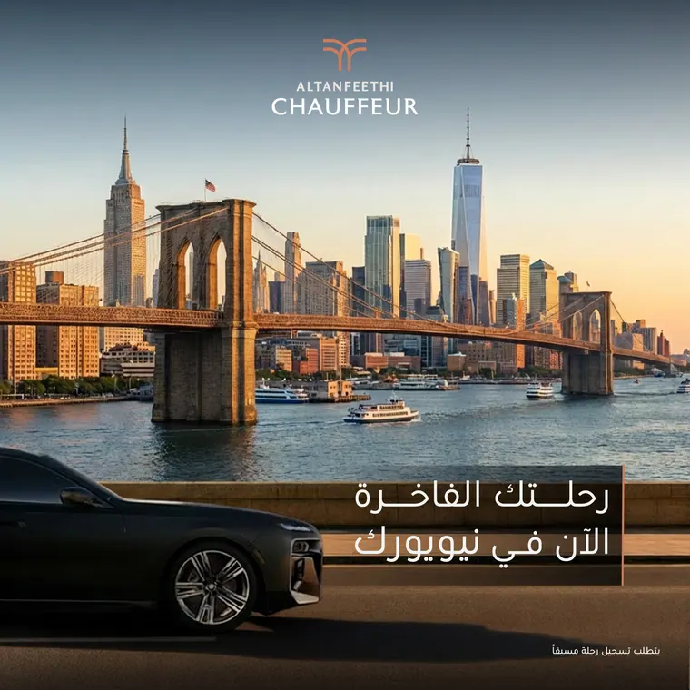
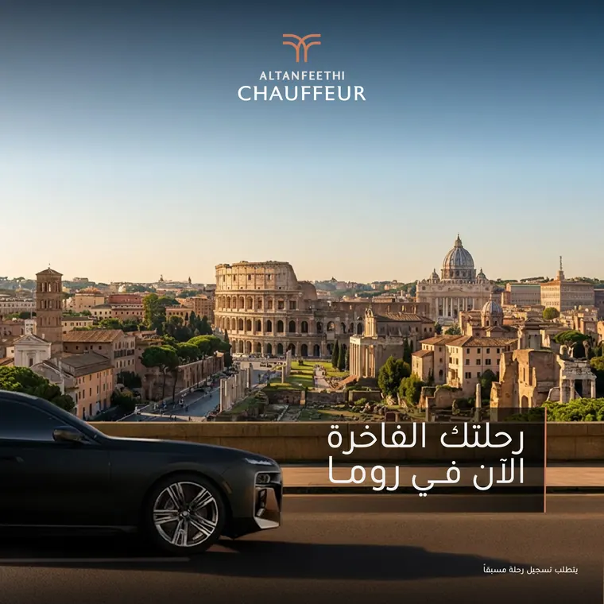
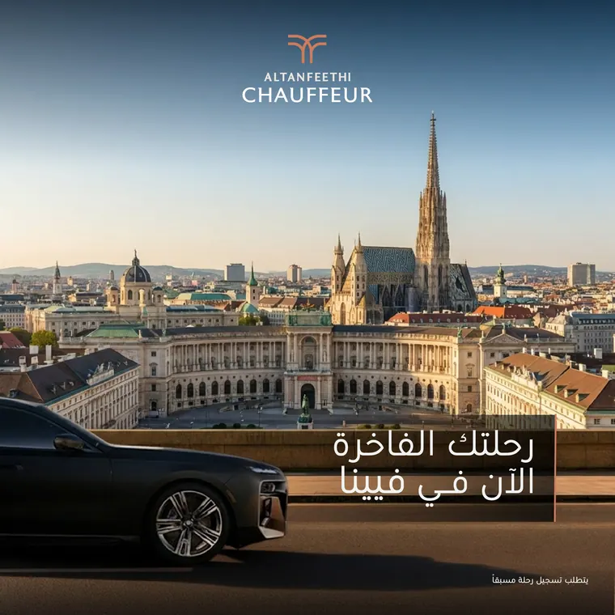
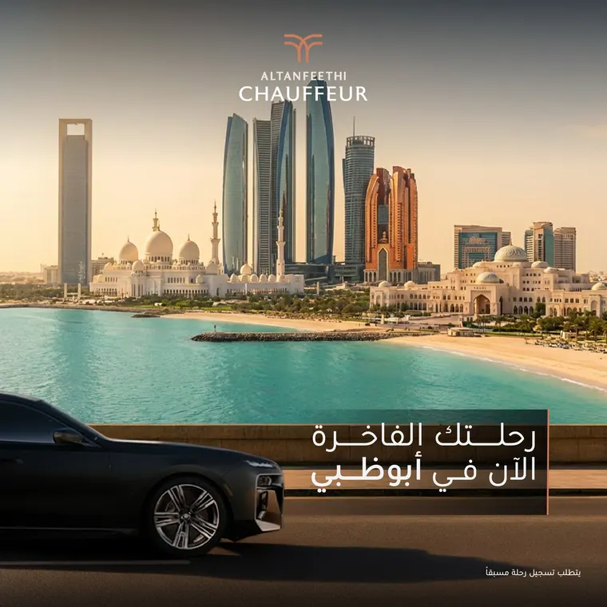
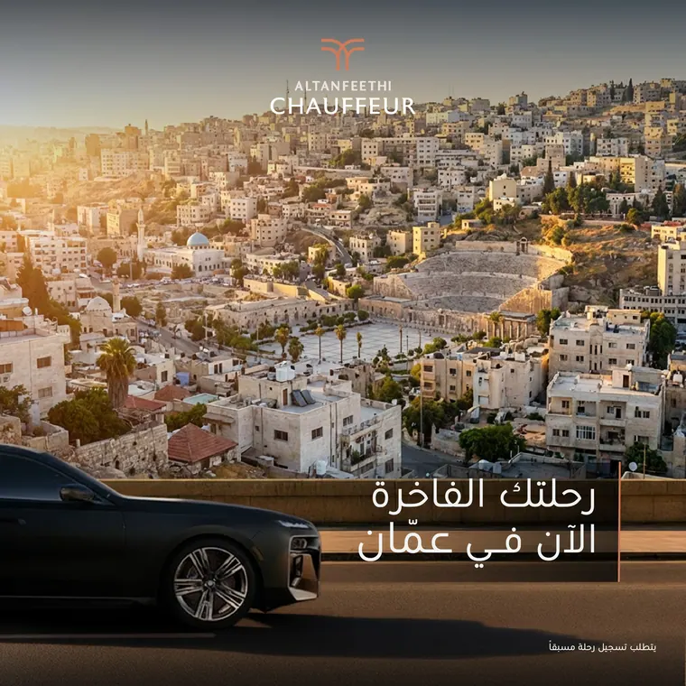
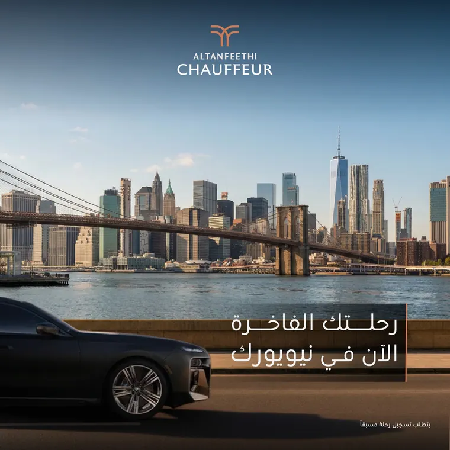

Altanfeethi Chauffeur
One journey, five cities.
A social media campaign announcing a chauffeur service’s arrival in five international cities. One adaptable layout lets every city feel distinct while the series reads as a single brand.
- Client
- Altanfeethi
- Role
- Planning, structure and design
- Scope
- Social media series, 5 cities
- AI tools
- Magnific, Photoshop
The city changes. The promise stays.
- The objective
- Launch a premium chauffeur service in five international cities with a clear luxury position.
- The idea
- The car and the message stay fixed while the skyline changes, so every post is news and part of one series.
- Visual direction
- Golden-hour skylines, a dark sedan and the copper mark: luxury, kept simple.





